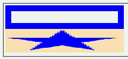
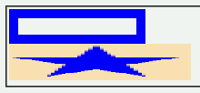

CSS1/CSS2ではボックスの幅を算出するときにパディングやボーダーのサイズは除外される。しかしWinIEではこれらを含めて幅や高さを算出する。
<div style="width:150px; height:20px; padding-left:30px; border:10px solid blue;"></div> <img src="../img/img01.png" alt="比較用画像" width="200" height="40">
上段のdiv要素のボーダー外縁のサイズと下段の画像のサイズが等しくなるように指定しています。
Moz1.0（互換モード）
WinIE6.0（互換モード）
ボックスサイズの算出時にボーダーまでを含めるという考え方はCSS3で導入される予定です。ただし、現在WinIEは公式的にはCSS3をサポートしていません。
WinIE6.0標準モードはCSS2に従ったサイズ算出を行います。IE6互換モードでは従来同様、ボーダーまでを含む算出が行われています。